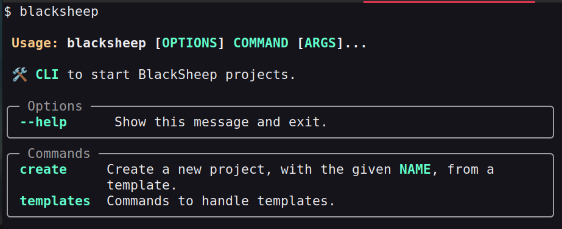
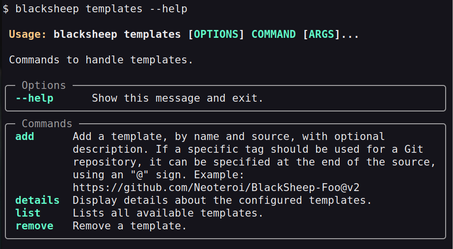
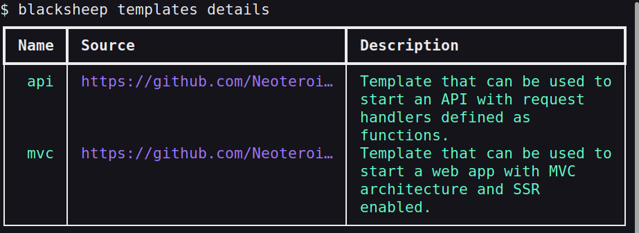
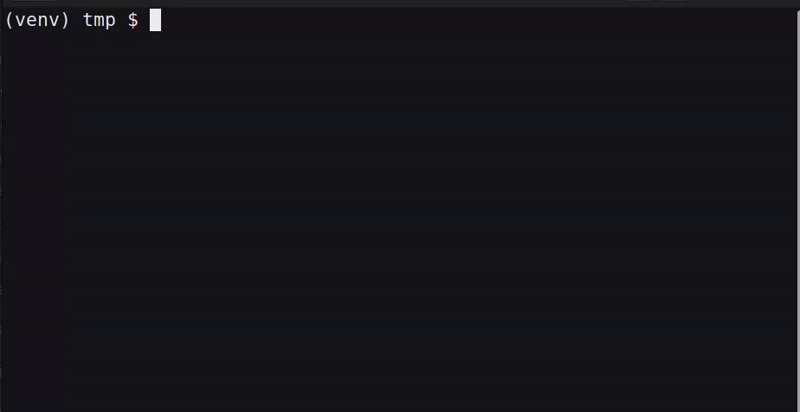

More about the BlackSheep-CLI¶
The second version of the web framework offers a command-line interface (CLI) to bootstrap new projects using templates, inspired by similar CLIs of popular front-end web frameworks.
This page describes the CLI in detail, covering the following subjects:
- How to install the
blacksheep-cli. - How to use its help.
- How to create a new project.
- How to configure new templates.
Installing the CLI¶
The CLI is distributed as a separate package, and can be installed from the Python Package Index:
pip install blacksheep-cli
Once installed, the CLI can be used to bootstrap new projects using interactive prompts.
Beware of dependencies
It is recommended to use the blacksheep-cli only to bootstrap new projects,
and to not include it as a dependency for web projects, because it
includes several dependencies that are not necessary to run a web server.
Using the help¶
The blacksheep-cli is a Click application
with auto-generated help. Type blacksheep or blacksheep --help to display the help,
with the list of command groups:

To display the help of a specific command group, use the command group name
followed by --help, like in the following example:

Listing available templates¶
The blacksheep-cli is pre-configured with official templates. To list the
available templates, use the blacksheep templates list, or the
blacksheep templates details commands.
$ blacksheep templates list
api
mvc
To display details about the templates, which are stored in a configuration file
in the user's folder, use the blacksheep templates details command:

Available templates
At the time of this writing, there are two officially maintained templates.
More can be added in the future, and users can configure additional
templates using the blacksheep templates add command.
Creating a new project¶
Use the blacksheep create command to bootstrap a project
using one of the supported templates. The command will prompt for the necessary
input to bootstrap a new project. Aside from the project name and template
type, each project template defines the parameters that are needed.

The CLI includes a help, and supports custom templates, using the
same sources supported by Cookiecutter.
Templates commands¶
| Command | Description |
|---|---|
add |
Adds a new template to the list of available templates. This information is stored in a configuration file in the user's folder (this is an implementation detail and might change in the future). |
remove |
Removes a template from the list of available templates. |
list |
Lists the names of the available templates. |
details |
Displays details about the available templates. |
Creating a new template¶
To create a new project template, define a new cookiecutter template.
To offer a better prompt, include a questions.json file for Python questionary,
whose questions match the parameters described in cookiecutter.json; like in
the API template.
The BlackSheep CLI supports all sources that are supported by cookiecutter.
Then include it in the list of available templates, using the templates add command,
like in:
blacksheep templates add foo https://github.com/Neoteroi/BlackSheep-Foo -d 'Some nice template! 🐃'
To use a specific git tag, add a ${tag} suffix to the source, like:
blacksheep templates add foov2 'https://github.com/Neoteroi/BlackSheepFoo$v2'
Cookiecutter¶
The blacksheep-cli uses Cookiecutter
under the hood, with questionary to
offer better prompts.
The official templates are cookiecutter templates, that can be used in a
non-interactive way if desired, using the cookiecutter CLI. This can be
useful to bootstrap new projects in automated jobs (CI/CD).
For example, to bootstrap a new project using the API template, with the name "foo" and using TOML files for application settings:
cookiecutter https://github.com/Neoteroi/BlackSheep-API --no-input project_name=foo app_settings_format=TOML
Last modified on: 2025-04-04 22:03:27